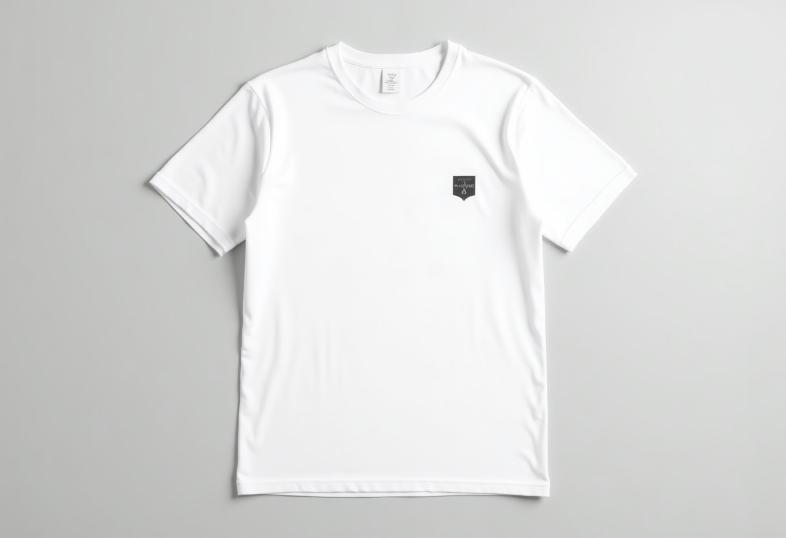
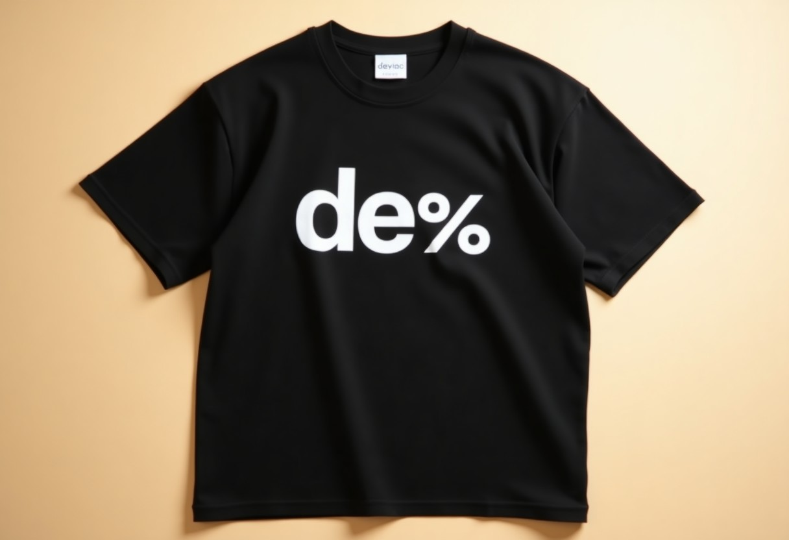
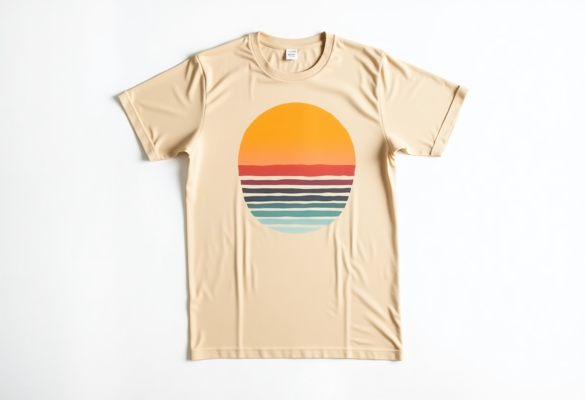

İsteğinize özel hazırlandı
Tişört ürün vitrini: 3 tasarım, hepsi çalışır hâlde
R10'daki isteğinizi okuduk: ürün fotoğrafı ve altında açıklama, e-ticaret sitenize yönlendirme butonu, Türkçe + İngilizce. Telefonunuzdan açıp deneyin; dil değiştirin, ürüne dokunun, "Satın al" butonuna basın. Örnekteki ürünler ve mağaza adresi yer tutucudur.

Seçenek 1 · Sade
Beyaz zemin, ürün öne çıkar; mağaza hissi
Vitrin yerleşimi: tam ekran fotoğrafCanlı aç →
Seçenek 2 · Sokak
Koyu zemin, canlı sarı vurgu; genç ve iddialı
Dergi yerleşimi: çerçeveli fotoğraf, numaralı bölümlerCanlı aç →
Seçenek 3 · Doğal
Toprak tonları, sıcak ve samimi
Uygulama yerleşimi: kartlar, açılır paneller, alt menüCanlı aç →İstediğinize ek olarak, ücretsiz eklediğimiz özellikler:
- Türkçe/İngilizce: ziyaretçi tek dokunuşla dili değiştirir, ürün adı ve açıklamaları iki dilde görünür
- Her ürüne 'Satın al' butonu: dokunan kişi doğrudan e-ticaret sitenizdeki o ürünün sayfasına gider (sepet/ödeme sizde kalır)
- Ürün arama ve renge göre süzme + hızlı bakış penceresi (büyük foto, açıklama, bedenler)
- Favoriler: ziyaretçi beğendiklerini işaretler, listeyi tek dokunuşla WhatsApp'tan arkadaşına gönderir
- Beden rehberi tablosu, güvenli alışveriş/kargo/iade bilgi kutuları
- Google için ürün şeması (fiyat, renk, görsel): aramada ürün bilgisi zengin görünür